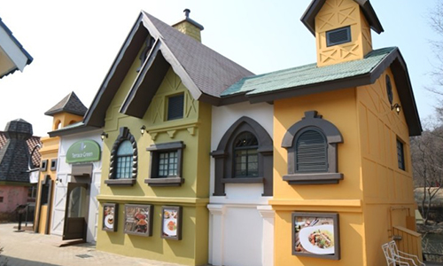
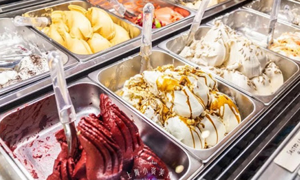
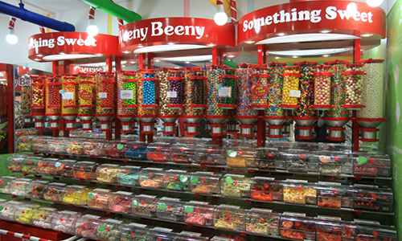
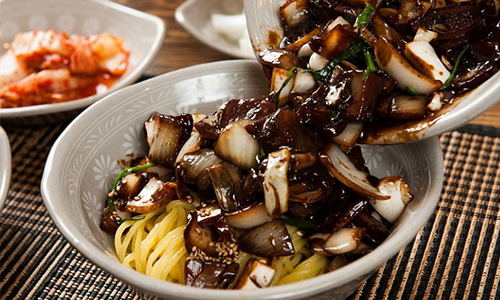
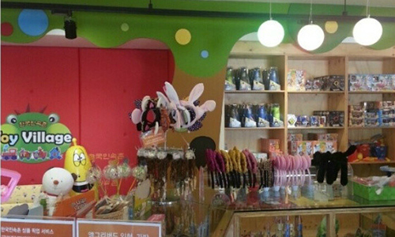
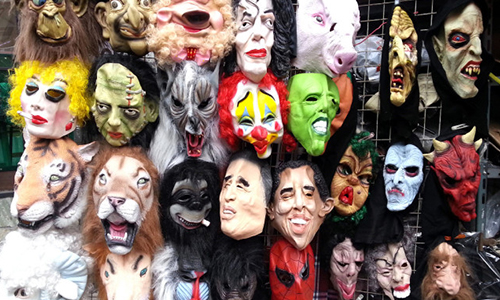

> 놀이마을 > 부대시설
부대시설
먹거리·살거리
놀이마을의 특별한 즐거움 먹거리와 살거리
먹거리
-

- 테라스그린
- 국내 13번째 할랄 인증 한식 레스토랑, 테라스 그린
- 외국인, 남녀노소 누구나 좋아하고, 쉽게 접할 수 있는 인증받은 할랄 식자재를 사용하여 더욱 맛있고 특색있게 만든 퓨전 한식 레스토랑입니다.
-

- 달콤 아이스크림
- 입안 가득 즐거움, 아이들이 가장 좋아하는 달콤!
- 새콤달콤하고 귀여운 모양의 아이스크림 전문점입니다. 맛있는 커피와 요거트 스무디는 덤~ 즐거운 나들이 시간에 함께 해 보세요~
-
- 레일로드 핫도그
- 한국민속촌에서 즐기는 핫도그와 수제 햄버거를 맛보세요!
- 아이들이 정말 좋아하는 레일로드 핫도그와 수제 햄버거! 산 속을 달리는 칙칙폭폭 꼬마열차 소리를 배경으로 먹기도 쉽고 맛도 좋은 최고의 간식을 맛보세요~
-

- 해피팩&위니비니
- 알록달록 캔디 천국, 위니비니!
- 보기만 해도 맛보고 싶은 각종 젤리, 사탕, 마카롱이 가득~ 프레페레 아이스크림, 과일쥬스 등 어린아이들에게 최고 인기 매장입니다~
-

- 민속반점
- 옛날 방식 그대로 표현한 중화요리 전문점
- 추억의 옛날식 자장면과 얼큰한 해물짬뽕부터 매장에서 직접 만든 수제 돈까스까지! 맛있는 옛날식 중화요리를 드시고 싶으시면 민속반점으로 오세요~
살거리
-

- 토이빌리지
- 재미있고 즐거운 동화나라 속으로~
- 환타지 동화나라 속으로 여러분을 초대합니다. 장난감 천국 토이빌리지에서 아이들의 상상력과 창의력을 쑥쑥 키워줄 다양한 장난감 친구들을 만나보세요~
-

- 귀신점
- 아찔했던 귀신체험을 기념품으로 추억하세요!
- 아찔한 호러세계의 경험을 이제 기념품으로 추억하세요~ 한국민속촌 귀신점에서는 귀신과 관련한 다양한 상품들을 판매하고 있습니다. 다른 곳에서는 보기 힘든 독특한 상품들이 기다리고 있어요~